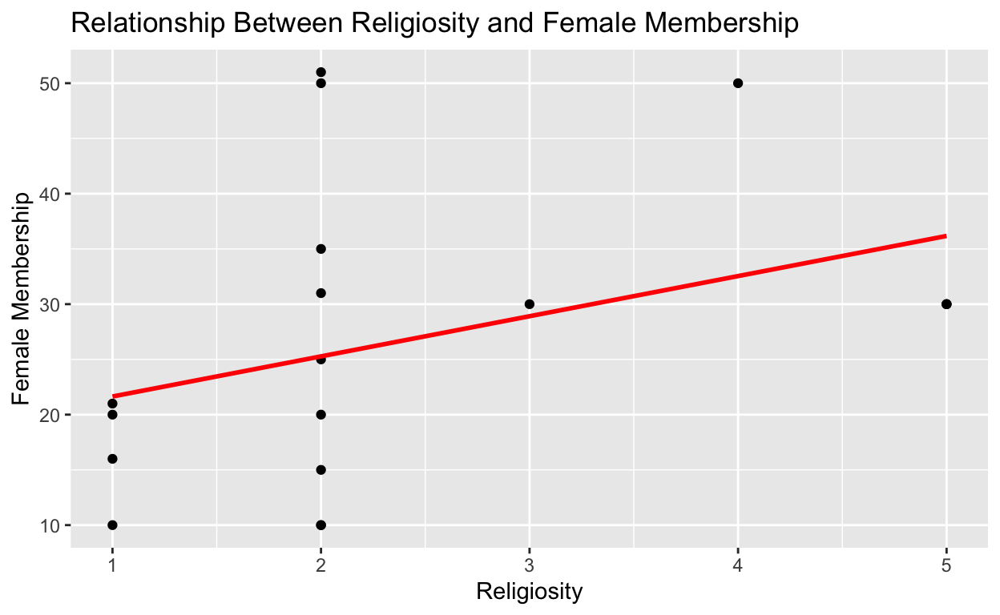

Introduction
In this project I explore the question: What is the relationship between party religiosity and share of female party membership in Lebanon? As an increasing amount women enter into politics in Lebanon, examining this relationship offers interesting insight into how religion, gender, and politics interact in the Levant. I will also examine and control for party year of origin as a potential confounding variable that may impact level of party religiosity and share of female party membership. I hypothesize that the share of female membership decreases as party religiosity increases. As is typical, I expect more religious parties to take more conservative stances with regards to the role of women in the political realm, which is often associated with an adherence to gender roles wherein women are seen as better suited to carry out more domestic-oriented, than public-facing tasks. Conversely, I hypothesize that less religious parties in Lebanon will exhibit higher shares of female membership, given the more liberal and open ideology often associated with non-religious groups. This study will offer insight into how religion may impact the political landscape and gender dynamics in Lebanon and may prompt further research into what specific religious components and features of a party spur or deter female political membership.
Hypothesis: The share of female membership decreases as party religiosity increases.
Null Hypothesis: There is no relationship between share of female membership and level of party religiosity.
Data and Research Method
In this study I draw on the “Party Variation in Religiosity and Women’s Leadership, Lebanon” dataset, which is sourced from the Association of Religion Data Archives. The data was collected between 2008 and 2010 and includes data on 18 different political parties in Lebanon. This data was collected by way of in-person via one-on-one interviews with party officials, leaders, and administrators.
My explanatory or independent variable is level of party religiosity, with possible answers ranging from “Areligious and Secular” (coded as 1) to “Extremely Religious” (coded as 5).The full ranking of choices are as follows: 1) Areligious and Secular, 2) Confessional but civil secularism 3) tolerant religiosity 4) Conservative but not extremist religiosity 5) Extremist religiosity. My outcome or dependent variable is the share of female members in a given political party, represented as a percent. For example, if the share of a female membership is 15, it would indicate that 15% of party members are female.
If I were to observe lower shares of female party membership for parties that are coded as having high levels of religiosity (likely coded as a 4 or 5), this would support my hypothesis that as party religiosity increases, share of female party membership decreases. Conversely, if I were to observe the opposite effect, that female membership is higher for parties that exhibit higher levels of religiosity, this would provide evidence against my hypothesis.
This study is a cross-sectional design. Although the collection period ranged from 2008 to 2010, the collection does not measure change in any variables and the data is used to measure a single point in time.
The above bar plot shows the relationship between religiosity (on a scale from 1 - 5, 1 being the most secular and 5 being the most religious) and share of female party membership (reflected as a percentage). From this graph, there is no clear evidence to support my hypothesis that as level of religiosity increases, share of female party decreases. In fact, at first glace, the data may suggest the opposite, as the greatest level of female membership is seen at level 4, or “conservative but not extremist religiosity” and the lowest is at level 1, dubbed “Areligious and secular.” However, the exact extent of the relationship between these two variables is not entirely clear without further statistical analysiss of the relationship between these two variables.
Results
| Variable | Coefficient Estimate | Standard Error | P-Value |
|---|---|---|---|
| (Intercept) | 18.007 | 6.231 | 0.011 |
| SECLRSM | 3.634 | 2.234 | 0.123 |
Interpretation of regression, Religiosity on share of female party membership:
In this case, the intercept of 39.808 has no practical meaning since religiosity is will never be 0. The scale of religiosity only ranges from 1 - 5.
The SECLRSM coefficient (religiosity) is 3.634. This means that for a one level increase in religiosity, the share of female party membership is expected to increase by 3.634 percentage points. Thus, it seems that on average, as religiosity increases, female party membership increases by 3.634 percentage points. However, because the p-value (0.123) is greater than .05, it appears that the relationship between female membership and party religiosity is not statistically significant. Thus, we cannot reject the null hypothesis that there is no relationship between level of religiosity and share of female party membership. Furthermore, we cannot conclude any sort of causal relationship, as there are many other confounding variables that may be impacting the relationship between the two variables, such as year of origin, party size, evolving party charters, social norms, and more.

| Variable | Coefficient Estimate | Standard Error | P-Value |
|---|---|---|---|
| (Intercept) | -593.195 | 163.676 | 0.002 |
| YRORGN | 0.314 | 0.083 | 0.002 |
Interpretation of regression: Year of party origin on share of female party membership:
While the intercept is not a relevant measure here since the year will never be equal to 0, the coefficient of YRORGN (year of party origin) is 0.3143. This suggests that on average, each year closer to present time that a party was established, the share of female membership will increase 0.3143 percentage points. Unlike the previous relationship between female membership and party religiosity, here, because the p-value (0.002) is less than .05, it appears that the relationship between female membership and year of origin is in fact statistically significant, meaning that the relationship we see between year of origin and share of female party membership is likely not due to random chance. Now, I will test for statistical significance between share of female party membership and level of party religiosity while controlling for year of origin to see whether the significant relationship between year of origin and share of female party membership is a confounding variable in the context of level of religiosity and share of female membership.

| Variable | Coefficient Estimate | Standard Error | P-Value |
|---|---|---|---|
| (Intercept) | -546.975 | 170.493 | 0.006 |
| YRORGN | 0.289 | 0.087 | 0.005 |
| SECLRSM | 1.804 | 1.838 | 0.342 |
Interpretation of regression: Religiosity on share of female party membership while controlling for year of party origin
The intercept has no practical meaning in this case since neither level of religiosity nor year of origin will ever be equal to 0.
The coefficient of YRORGN is 0.2886. This means that, for each year closer to present time that a party was established, the the share of female party membership is expected to increase 0.2886 percentage points.
The coefficient for SECLRSM is 1.8041. This means that for each level increase in religiosity (SECLRSM), the share of female membership expected to increase by 1.8041 percentage points, while controlling for year of origin. However, the p-value is 0.342 which is greater than 0.05, meaning that even while controlling for year of party origin, there is still no statistically significant relationship between level of religiosity and share of female party membership. Thus, we still cannot reject the null hypothesis that there is no relationship between level of party religiosity and share of female party membership.
| Variable | Coefficient Estimate | Standard Error | P-Value |
|---|---|---|---|
| (Intercept) | 89.556 | 535.515 | 0.883 |
| SECLRSM | 6.170 | 6.550 | 0.446 |
| YRORGN | -0.045 | 0.274 | 0.884 |
| SEAT_PMT | 1.082 | 1.455 | 0.535 |
| DEM | -11.632 | 17.163 | 0.568 |
| I_QUOTA | -9.880 | 12.123 | 0.501 |
| LEFTIST | 20.612 | 41.611 | 0.669 |
| DECSN | 5.164 | 12.841 | 0.726 |
| MEMCIVIL | 1.535 | 1.417 | 0.392 |
| MEMSECPR | 1.053 | 1.782 | 0.615 |
| CIVILCON | -24.507 | 23.285 | 0.403 |
| F_NOMCPL | -2.782 | 6.471 | 0.709 |
| F_NOMPMT | -0.985 | 1.279 | 0.522 |
| F_LEAD | 0.258 | 0.825 | 0.784 |
| PLUR | -8.565 | 16.035 | 0.647 |
| WINGS | 10.077 | 13.135 | 0.523 |
| DEMOCRAC | NA | NA | NA |
Conclusion
While the regression shows a positive relationship between level of religiosity and share of female party membership, meaning that as religiosity increases, share of female party membership tended to increase as well, given that the p-value exceeds 0.05 (even when controlling for the year of party origin), these results are not statistically significant. Thus, I cannot reject the null hypothesis that there is no significant relationship between level of party religiosity and share of female party membership. Furthermore, I cannot conclude any causal relationship between level of religiosity and female party membership nor find any evidence to support my original hypothesis that as level of religiosity increases, share of party membership will tend to decrease. This is found to be true even when controlling for all other variables in the data set as possible confounders.
However, when examining year of party origin as a secondary, potentially confounding variable on religiosity, I found that there was a positive statistically significant relationship between the year a party was established and share of female party membership, indicating that the more recently a party was a established, the higher its female membership share tends to be. However, because there are likely other confounders left unaccounted for (and not included in this dataset) such as party size, education level of party leadership, internal party structures and more, I cannot conclude any (causal) relationship beyond correlation. These results may reflect changing attitudes and social norms around women in Lebanon with regards to their role in politics, or the public sphere in general.
This study certainly prompts further research into changing social norms around women in Lebanon, their relationship to religion in the public sphere, and other confounding variables that may be influencing the lack of relationship between these two key variables that we might expect to exhibit a statistically significant relationship.
There are several key limitations to this study. First, the study only includes 18 parties when there are over 90 active parties in Lebanon. With more data, this type of analysis may yield different results that more accurately reflect the relationship between the variables at hand. Additionally, since this data was collected via interviews with party officials and administrators, there may be unaccounted for bias since the data was largely self-reported.
This study could be improved by further exploring possible confounding variables that contribute the lacking relationship between level of religiosity and share of female party membership as well as those that may be contributing to the significant relationship between year of party origin and share of female party membership. As of now, the temporal dynamics and the changes in female membership over time are still left largely unexplored and other factors such as level of female education, changing social norms and more can likely explain. This study could also draw on data from other sources to corroborate the level of religiosity and share of female party membership used in this study in order to combat the aforementioned response bias in the collection process since party elites may feel compelled to represent their party and its level of female membership in a particular way. Also, future studies might explore the marital status, education, and other person factors that might be significant among women who are a part of these political parties and how these variables differ across level of religiosity.